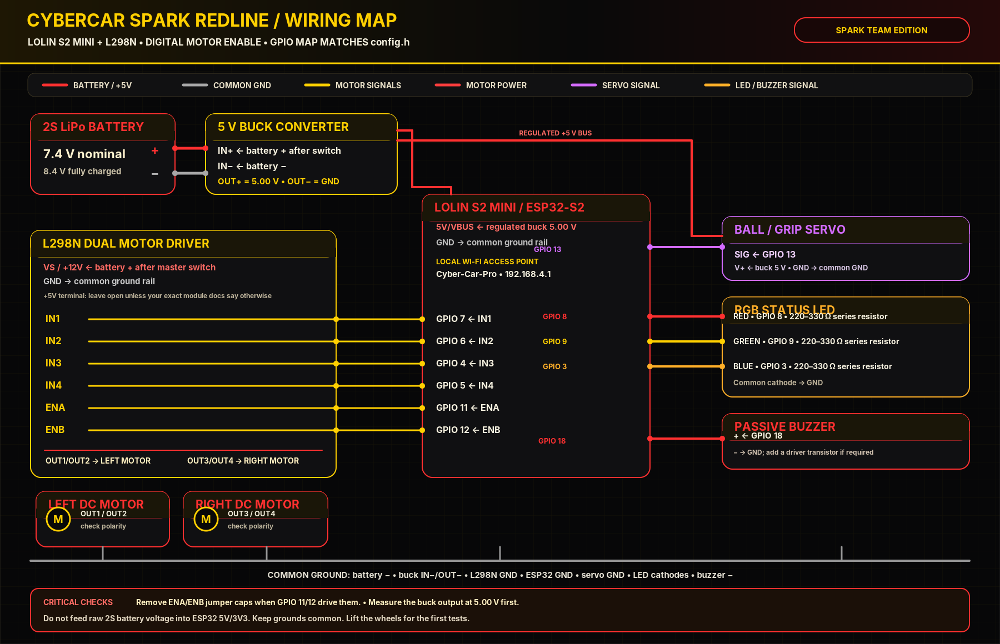

A practical guide to the current LOLIN S2 Mini + L298N car: matching wiring, what each part does, how the firmware is organized, how to share the work as a team, and a realistic roadmap toward a stronger robot.
The diagram follows the pin assignments in config.h and motor_driver.h shipped with this project. GPIO 3 is the blue status LED in this build; it is not a battery ADC input here.

Vector version: Download / edit the SVG wiring diagram. Raster version: Download PNG.
| Component / terminal | Connect to | Why |
|---|---|---|
| L298N IN1 / IN2 | ESP32-S2 GPIO 7 / GPIO 6 | Sets the direction of motor channel A. |
| L298N IN3 / IN4 | ESP32-S2 GPIO 4 / GPIO 5 | Sets the direction of motor channel B. |
| L298N ENA / ENB | ESP32-S2 GPIO 11 / GPIO 12 | Digitally enables each motor channel; remove the ENA/ENB jumper caps. |
| L298N OUT1 / OUT2 | Left motor pair | Motor channel A outputs; swap a pair if its direction is reversed. |
| L298N OUT3 / OUT4 | Right motor pair | Motor channel B outputs. |
| Buck OUT+ / OUT− | Regulated 5V / common ground | Powers the ESP32 board’s 5V/VBUS input and the servo’s 5V rail. Set 5.00 V before connection. |
| Ball servo signal | GPIO 13 | Servo position signal. Power the servo from the 5V buck, not the 3V3 pin. |
| RGB LED channels | GPIO 8 red, GPIO 9 green, GPIO 3 blue; one 220–330 Ω resistor per channel | Status feedback; diagram assumes a common-cathode RGB LED. |
| Passive piezo buzzer | GPIO 18 signal, negative to GND | Sound feedback. Use a transistor/MOSFET driver if the buzzer current exceeds a GPIO-safe load. |
| Ground | Battery−, buck OUT−, ESP32 GND, L298N GND, servo GND, LED cathodes, buzzer− | A shared reference is required for the logic signals to work. |
The controller and Wi-Fi access point. It hosts the captive portal at http://192.168.4.1/, validates local control requests, then sets motor-driver GPIO signals. The phone connects to the car’s own Wi-Fi network; this is local control, not Internet service.
Motor current must not be supplied by ESP32 GPIO pins. The L298N switches external motor power according to IN1–IN4 and ENA/ENB. It loses some voltage as heat, so make sure the motors and driver can handle the actual load.
Motor power stageDirectionThe battery feeds the motor driver and the 5V buck converter. Use an appropriate LiPo charger, low-voltage protection/monitoring, a secure connector, and a physical disconnect. A 2S pack is about 7.4 V nominal and 8.4 V fully charged.
Portable supplyPhysical shutoffReduces the battery voltage to a regulated 5.00 V rail. A servo can draw brief current spikes, so size the converter for the controller and servo together. Never connect the buck output to the ESP32 3V3 pin.
Regulated logic railServo supplyGPIO 13 carries the command signal, while the servo is powered by the separate 5V rail. Do not power a servo from an ESP32 GPIO. Add local decoupling near the servo if resets occur during motion.
Mechanical actuatorThey communicate state without requiring the phone screen: idle, driving, and emergency stop can have different colors and tones. Each LED channel needs its own current-limiting resistor. A high-current buzzer needs a driver stage.
User feedbackDebuggingUse the wiring diagram above as the source of truth for the current firmware pin map; verify every wire against the labels on your physical modules before applying power.
The project is split into small files on purpose. The pin table in the diagram must always match config.h; if you change a GPIO in code, update the diagram and wiring notes too.
config.h — single source of truthStores SSID/password, GPIO assignments, timing constants, speed profiles, and command enums. Use constexpr for fixed compile-time values. Don’t make changing state (current command, emergency latch, uptime) constexpr.
namespace Config {
constexpr uint8_t MOTOR_IN1_PIN = 7;
constexpr uint8_t MOTOR_IN2_PIN = 6;
constexpr uint8_t MOTOR_IN3_PIN = 4;
constexpr uint8_t MOTOR_IN4_PIN = 5;
constexpr uint8_t MOTOR_ENA_PIN = 11;
constexpr uint8_t MOTOR_ENB_PIN = 12;
constexpr uint8_t BALL_SERVO_PIN = 13;
}motor_driver.h — one jobOwns pin initialization and translates Forward/Backward/Left/Right/Stop/Brake to H-bridge inputs. Keeping it separate makes the motor logic testable without mixing it with web HTML.
motors.apply(DriveCommand::Forward, millis()); motors.tick(millis()); // ENA and ENB: digital HIGH/LOW only. // Medium/Slow are timed bursts, not smooth motor voltage control.
captive_portal.h — UI + API boundaryStarts the local Wi-Fi AP, serves the HTML, provides a small JSON state endpoint, and validates control requests. The portal is local HTTP; don’t port-forward it to the public Internet. Browser session checks improve request hygiene, but HTTP is not encrypted.
GET /api/state POST /api/joy?x=…&y=… POST /api/speed?level=slow|medium|fast POST /api/brake POST /api/resume
CyberCarPro_optimized.ino — orchestrationCreates the hardware objects, starts the watchdog and portal, services incoming HTTP requests, then updates the car using a fresh millis() timestamp. Keep the main loop short and avoid long delay() calls or blocking sensor work.
void loop() {
esp_task_wdt_reset();
portal.update();
car.update(millis());
delay(4);
}Four specialists, one shared mission. Keep each role accountable, review changes as a team, and test every hardware or firmware change on the real car before a public demonstration.
AI & Robotics Engineer. Coordinates milestones, integration, competition requirements, safety reviews, and final sign-off. Keeps the project board and the team’s engineering decisions consistent.
AI & Robotics Engineer. Owns AI experiments and data pipelines. Starts with small, measurable models and only deploys inference onto the robot after accuracy, latency, and memory use have been measured.
AI & Robotics Engineer. Owns requirements, system architecture, interfaces between modules, state diagrams, API contracts, and the integration checklist.
AI & Robotics Engineer. Owns the chassis layout, motor mounting, cable routing, physical stability, serviceability, and future mechanical upgrades.
The ESP32 is the local backend in this offline-first design: the browser calls bounded HTTP endpoints, and firmware verifies the session, trusted origin, argument types, and allowed command values before changing hardware. The new secure_backend.h centralizes these rules.
Joystick values are strict bounded integers (-100 to 100); speed and servo actions are fixed allowlists. Unknown actions are rejected, not executed. No request value is treated as C++ code, JavaScript, or an arbitrary JSON fragment.
State responses contain only fixed enum names, booleans, and integers. Never concatenate arbitrary browser text into a JSON response. If a future endpoint must return user-controlled text, escape it with SecureBackend::escapeJsonString or use a reviewed serializer.
A PIN gate issues a random session token in an HttpOnly, SameSite=Strict cookie; mutating requests require the expected local Origin. Login attempts are temporarily blocked after repeated failures, API calls are rate-limited, and the motor command watchdog stops movement after lost keepalives.
The captive portal uses HTTP, not TLS. It is intended only for a private direct Wi-Fi link; do not port-forward it or expose it publicly. PIN authentication is an extra barrier, not a replacement for encrypted transport on an Internet service.
The live dashboard draws the face as one inline SVG, then switches a small state name when the car is idle, moving, boosting, or braking. No portrait image is repeatedly downloaded, and no large animation file is stored in RAM.
For neon line art, use SVG paths or a tiny 64×64 one-bit bitmap. Avoid full-screen PNG/JPEG files. The included editable assets are in CyberCar/CyberCarPro_optimized/web_assets/faces/.
For this build, copy the few vector paths into the single robotFace SVG in captive_portal.h. Separate image files require LittleFS setup; if you later enable it, place them under data/faces/ and serve them by a fixed allowlisted path.
idle, forward, backward, left, right, fast, brake, and error. Use one face display and swap the expression rather than mounting eight images simultaneously.
A raw 64×64 one-bit bitmap uses 512 bytes of pixel data. Keep the assets simple, avoid large blur filters, and run CSS animations on the phone browser. ESP32 should serve small HTML/SVG and status JSON, not frames of video.
Verify forward/reverse/left/right, make motor polarity consistent, add a physical emergency power switch, secure the battery, and measure free heap during portal activity.
Must work every timeAdd battery voltage monitoring with a correctly calculated divider and calibrated ADC scaling; log low-voltage state. Add the selected future sensor only after defining a clear interface and a safe default behavior.
Measure before adding AIAdd wheel encoders for speed/distance estimates, a motion state machine, controlled acceleration, and a timed route recorder. Save short waypoints, not video or huge arrays in RAM.
Repeatable movementAdd distance sensors or a camera only after choosing the compute board and power budget. The ESP32-S2 is well suited to control/UI but has limited RAM for large neural-network models.
Edge constraintsStart with small rule-based behaviors or a tiny quantized classifier, collect labelled examples, validate in a safe test area, and retain a deterministic stop path independent from the model.
AI is not the safety layerPrepare a demo checklist, spare battery, spare wires, versioned firmware, a one-page block diagram, clear failure recovery, and logs proving each feature. Design for repair as much as appearance.
Reliability + presentationIDLE → DRIVE → TURN → STOP, updated using millis(); don’t block the web server with long delays.